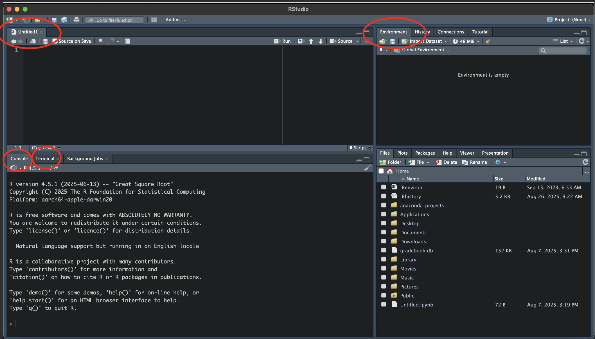
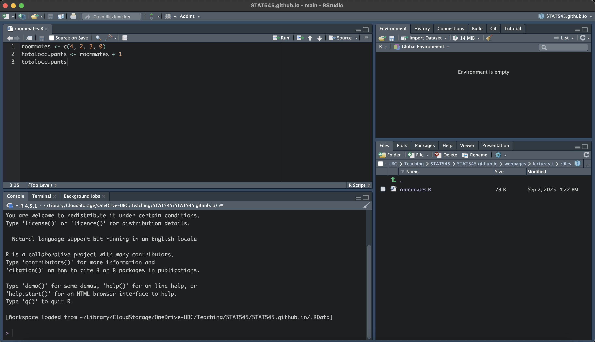
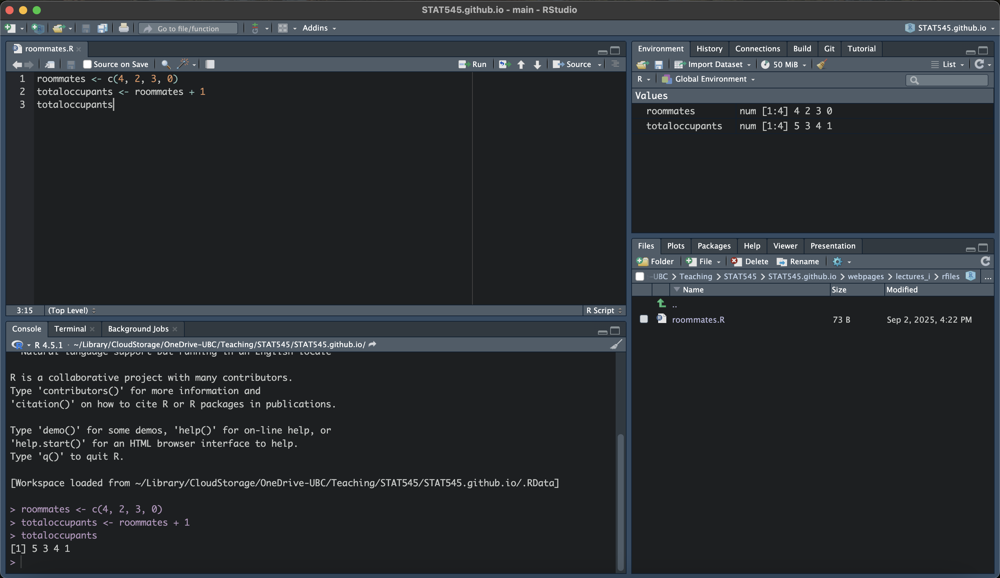
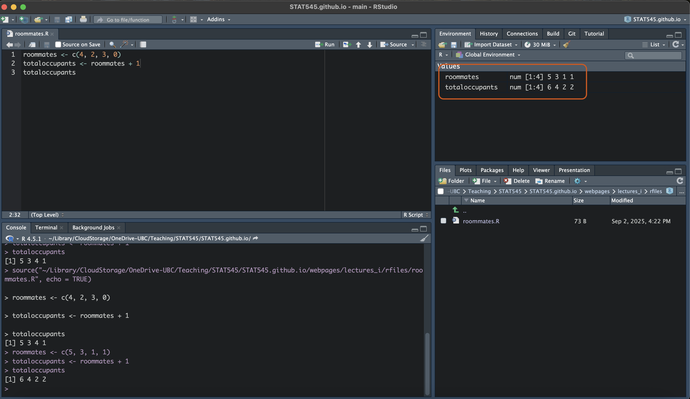

Lecture 1: Welcome and Intro to R
STAT 545 - Fall 2026
Welcome to STAT545!
For today’s lecture, we are going to go through the some important information related to the course and jump right into some coding in R using an interactive worksheet and Jupyter Notebooks.
Hello!
My name is Grace (she/her)
I’m an Assistant Professor of Teaching (just finished my first year)
Originally from NS ➡️ did Grad School in Waterloo, ON ➡️ now in Vancouver!
- Training: BSc Math, MMATH Biostatistics, PhD Biostatistics
Hobbies include crafting (knitting/crochet/pottery/sewing) and looking for banana slugs in the forest
Positionality Statement
We acknowledge that the land on which we gather is the traditional, ancestral, and unceded territory of the xwməθkwəy̓əm (Musqueam) People.
Throughout this course, we will be weaving Indigenous topics into more “traditional” course material. I myself am a settler and am new to some of these topics. I am grateful for the opportunity to learn and grow with you.
Classroom Policy
As stated in the syllabus, there is a zero tolerance policy for disrespectful behaviour in this classroom.
- This includes within physical the classroom community (your peers, TAs, instructors, support staff) and online (discussion forums, social media).
Some sensitive topics may be discussed throughout this course.
We are all learners and it is okay to make mistakes.
We will offer each other corrections politely, and I ask that you keep an open mind as we all continue to learn in this space.
This classroom is a safe space. You are welcome here.
Course Platforms
We will be using various technologies throughout this course which you should familiarize yourself with. The main platforms we’ll be using are;
The course website (this one!),
Canvas (for submitting assignments),
Slack (for communications),
RStudio (for writing R code) (Video Here!),
GitHub (for version control and collaboration), and
Jupyter notebooks (for interactive worksheets) (Video Here!).
If you’ve never used some of these before, that’s absolutely OK. This course is made to guide you through the basics of many of these platforms.
Assessments
Worksheets (20%)
Worksheets are produced on our JupyterHub linked on Canvas. These are formative assessments meant to supplement lectures.
There are no late submissions accepted for worksheets. The server will automatically pull your work at the due date and run the autograding software.
Extensions must be requested at least 6 hours before the due date, and will only be granted for extenuating circumstances.
Assessments
Mini Data Analysis (45%)
Two equally weighted parts which include an analysis of a real data set
These are not graded on the basis of how sophisticated your statistical analysis is, but on the quality of your code and workflow
Collaborative Project (35%)
A group project intended to assess version controlling
Groups will be randomly assigned
Important Course Information
All of the important information is in the syllabus. There are a few items I’d like to emphasize:
Stay home if you’re sick. Fill out an Academic Concession Self Declaration form if you miss a major assessment due to illness. Accommodations will be given on a case-by-case basis.
Bring a charged laptop to class!
All communications are to be done on Slack - please do not email me questions unless they are of a sensitive nature (i.e., an academic concession form). The invite link is on Canvas
But please - read the syllabus :)
Course AI Policy
Important
Plagiarism includes submitting the same response as another student, copying without citation, or copying from generative AI (ChatGPT, Gemini, etc.). Students are responsible for ensuring that any work submitted does not constitute plagiarism. Students who are in any doubt as to what constitutes plagiarism should consult their instructor before handing in any assignments.
In this course, Generative AI can be used in the following ways:
to clarify concepts discussed in class
as an “advanced search engine” (i.e., searching error codes)
debugging code that students wrote and attempted to debug on their own
Generative AI CANNOT be used to generate text or code from scratch. Assessments suspected of having AI-generated text and/or code will be flagged and temporarily assigned a grade of zero. Students will be required to meet with the instructor to receive a grade.
Any use of Generative AI must be disclosed. Students will be asked to submit an AI Declaration Statement disclosing their use on any assessments
Lecture Flow
Lectures for STAT545 are designed to be more interactive than a traditional statistics lecture.
The class will begin with a short summary of the previous class, followed by an introduction to that day’s topic. For most of the lectures, we will be going through the interactive worksheets (yes, the ones that you receive marks for and yes, prior to the deadline). This will give provide you with dedicated time to work on the assessments in class with access to the instructor and the TAs.
Many lectures will have an accompanying video, which will be linked on the webpage and on our STAT545 YouTube Playlist.
Lectures build on top of each other and it is crucial to stay on track as we progress through this course.
Intro to R
R Basics
R is an open source programming language designed for statistical computing and data analysis.
In its simplest form, R is a calculator. For example, we can type
1 + 2in the console of R (we will be using RStudio) will spit out the answer of 3.
(The [1] in the answer can be ignored for now)
R Basics
- R can also be used to do more complex expressions, such as \((450 - 15)^2/(5 + 7\times4)\), which we would write in R with:
Variables
R can also be used to store values as a variable.
To assign a value to a variable in R, we use the
<-symbol (the less than symbol followed by the minus sign).For example, if I wanted to store the number of apartments I’ve lived in since moving out for university, I could assign this to a variable called
apartments_lived_inby:
Variables
Then, if I later wanted to use this value, I could simply execute
which you can see stores the value of 4! I can also do math on this variable, for example multiplying it by 2:
Variables can also store the results of expressions, which we will dive into in Worksheet A1.
Data Structures
R can handle different data structures (which are just objects that contain data) including:
- strings
- vectors
- data frames* (just to name a few).
We will go over the basics of these structures in this section.
Strings
- A string is a R (often called character data) is a string of characters enclosed in quotations. For example, I could store my name in a variable called
name:
and access it later by typing name
Strings
Strings can also have white spaces and punctuation, such as
You can use single ' or double " quotation marks to wrap around the string - just be consistent!
Tip
In some worksheets, questions are multiple choice. Ensure that you type your answer as a string, i.e., my_answer <- "A".
Numeric Vectors
A vector is an ordered list of items of the same type. A numeric vector is an ordered list of numbers.
Vectors are created in R using the
c()function, with elements separated by commas.For example, suppose someone wanted to store the number of roommates they lived with in their four apartments. They had 4 roommates in their first apartment, then 2 in their next, followed by 3, and finally lived alone with 0 roommates. We can save this information in a vector named
roommatesusing the following code:
Numeric Vectors
We can access each element of the vector by indexing it with
[].In R, unlike some other programming languages, the index starts at 1. So if you’d like to access the first element of the vector, you can use
[1]. For example, to see the number of roommates in my first apartment, I could use
Or view the number of roommates in my third apartment using:
Numeric Vectors
We can also perform math on vectors!
Suppose we wanted to calculate the total number of occupants in each apartment (including myself). I need to add one person to each apartment! To do so, I can make a new variable called
totaloccupantswhich is equal toroommatesplus one:
We will dive more into math (functions) on vectors in Worksheet 1.
Logical Vectors
A logical vector is a vector where the elements are a logical statement containing
TRUEorFALSE.Let’s see how we can create a vector indicating whether or not there were more than two roommates in a given apartment. We can store this as a variable, named
more_than_two_roommates using
From the output, you can see that this statement is true for apartments 1 and 3, indicating there were more than two roommates for these apartments.
Other useful functions on vectors
R has a number of built in functions that are useful for exploring vectors.
We can check the length (number of elements) of a vector using the
length()function:
This answer makes sense as we had data for four apartments.
Other useful functions on vectors
- We can also look at the types of data stored in vectors using the
typeoffunction
double is a type of numeric data. logical is the type of data that stores TRUE/FALSE.
Dataframes
Dataframes are a powerful tool for storing multidimensional data.
For example, we could have data on housing for multiple people, including the rent paid, number of roommates, city, etc. Dataframes are a convenient way to store such information.
Suppose we have data on three individuals stored in the dataframe
housingdata.
We see that Grace rents a 2 bedroom apartment, with two total occupants, and the total rent is $2700 per month in Vancouver. Mei lives in Toronto and has a 3 bedroom apartment shared between 4 people, and the total rent is $5000. Sam lives alone in a one bedroom apartment in Halifax, and pays $1900.
(We will focus more on dataframes in a coming lecture, but I wanted to mention them here)
RStudio and Saving your R Code
RStudio provides us with an Integrated Development Environment (IDE) that allows you to save R Scripts (documents containing your R code). It’s free and open-source!
R Studio will look like this (mine is a dark theme):

I’ve highlighted some important pieces:
Console
- Useful for quick calculations you don’t want to save, debugging
Untitled1
an R Script (currently unsaved/untitled)
Saves your code
(P.S., You can create an R Script by going File > New File > R Script)
Terminal
- Used for command line programming. We will use this later when connecting to GitHub (ignore for now but know it exists!)
Environment
- Shows your saved variables, data structures, etc (currently empty)
RStudio and Saving your R Code
It’s okay if your RStudio is configured differently! You can move the positions of some of these panes in the settings.
For any code you’d like to save, we write it in an R Script! Let’s create a file called “roommates.R”. In RStudio, go to File > New File > R Script. Now, go to File > Save As… and save it somewhere that makes sense for you (i.e., a STAT545 folder).
Instead of working line by line, let’s add the following (very simple) code to a new file called roommates.R to calculate the total number of occupants in each apartment lived in:
Save your work.
Your RStudio will look something like this:

RStudio and Saving your R Code
To run the code, we can highlight it and click the “Run” button or click cmd/ctrl + Shift + Enter to run all code in the R Script. You will notice the code gets sent line by line to the Console, and the variables you created will now be in the Environment.

## RStudio and Saving your R CodeNow, anytime you want to run that code you have it right there! You can also edit the code and re-run it to update the variables.
The variables are stored in the environment. If you want to start fresh, you can click the broom button in the environment which will clear your variables. Then, run your code from top to bottom again.
RStudio and Saving your R Code
Exercise 1: Update roommates.R
Create an R file that creates the housingdata dataset:
Your landlord has decided that pets count as occupants! You’ve lived with a pet cat since you moved into your first apartment. Update the code in your roommates.R file to reflect this, and re-run it to get the new total number of occupants in each apartment.
Save the file.
RStudio and Saving your R Code
Exercise 2: Playing in the Console
Out of curiosity, you wanted to see how many occupants were in your friend’s apartment. You don’t really want to save this code, so you go to the Console to play around with the numbers. Your friend had 5 roommates in first year, then 3 in second year, then 1 roommate in third and fourth years. You execute the following code in the R Console (not touching roommates.R):
Did anything in your Environment change?
RStudio and Saving your R Code
Well… even though you didn’t touch roommates.R, you overwrote the roommates and totaloccupants variables!

So remember, the console is not separate (functionally) in R. Anything you do in the console will affect your variables in the environment. Of course, if we were to clear our environment and re-run the roommates.R file, we’d go back to our original data.
Those are the basics of RStudio! You will learn more as the course progresses.
What to do when you’re stuck
Working with technology can be hard. Coding can be especially hard. Getting stuck is very common in both cases.
Before running to Slack, try searching for the answer yourself. This is an extremely important real-world skill! When you’re conducting your own analyses down the road, you may not have anyone to directly ask for help.
Try:
Googling your error codes (removing highly specific information like variable names)
Googling the problem (i.e., R dataframe can’t rename columns)
Search StackOverflow and include the
[r]tag. Or the[ggplot2]tag. Or the[plyr]tag. You get the idea.
Caution
Beware of AI tools: sometimes they’re helpful, and sometimes they’re not.
While I encourage you to search for answers on your own, don’t fret if you’re stuck. We’re here to help on Slack! Review the posting guidelines on the Syllabus so your questions go to the appropriate channel.
Worksheet A1
Now it’s your turn to use R! Work through Worksheet A1 on your own and reach out on Slack if you have any issues. Refer to the previous lecture if you need guidance on how to access Worksheets on Jupyter Notebooks.
Some notes on Jupyter notebooks:
A terminal or command prompt window will pop up. Do not close it until you are finished with Jupyter. - Save often!
Sometimes OneDrive folders do not show up on Jupyter. Try saving in a folder on your Desktop if you have issues finding files.
To run code, highlight it and click the run (play) button or ctrl/cmd and enter
For more on Jupyter Notebooks and our worksheets, see this YouTube video!
To Save These Slides With Your Code
To Print to PDF (with your code!), do the following:
Open the in-browser print dialog
CMD/CTRL + Por Right click > PrintChange the Destination setting to Save as PDF.
Change the Layout to Landscape.
Change the Margins to None. Enable the Background graphics option.
Click Save 🎉
In all cases, ensure the code chunks don’t get cut off (i.e., a line is too long). You will not be able to edit these from the PDF directly (though you could open the slides again and copy-and-paste to re-run the code!)
Comments
Comments are lines (or parts of lines) of code that R ignores.
We specify them using
#. Commenting can be useful for documenting what you’re doing, or temporarily stopping a line from running. For example: